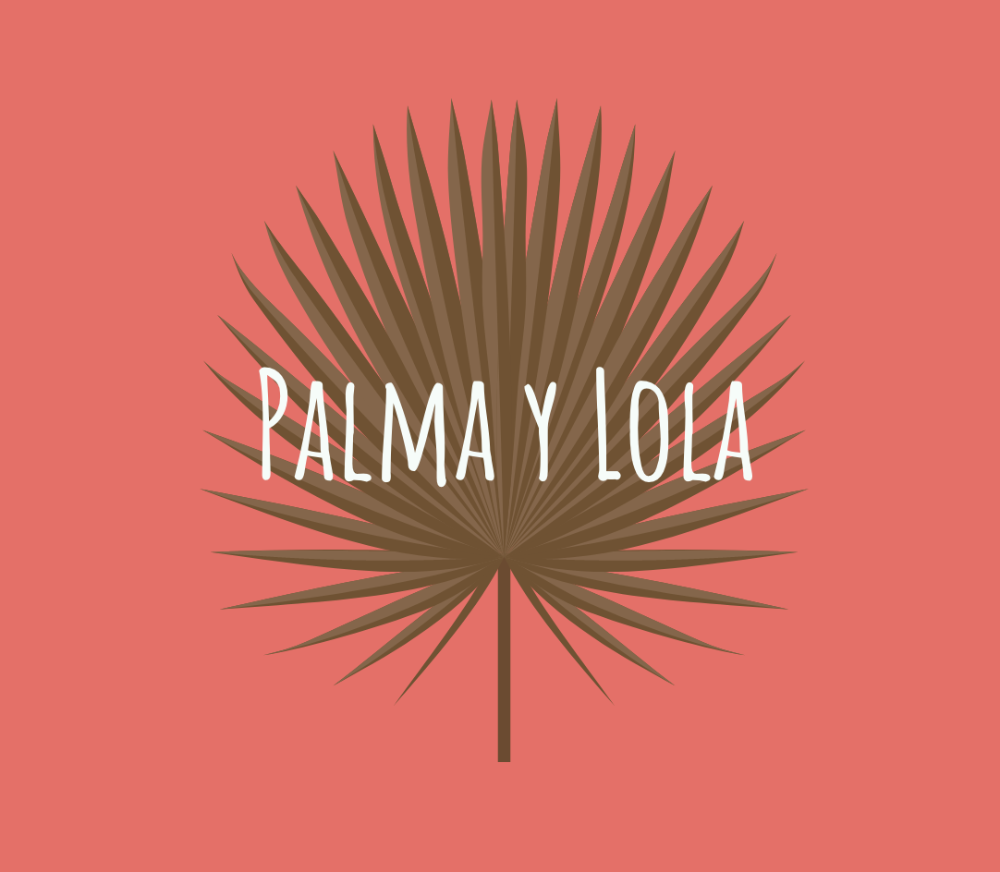

About Us
All items made from the Iraca Palm
Palma y Lola is a Colombian accessory brand inspired by tropical climates and warm golden sunshine. It is a collection of fresh and unique designs made entirely from the Iraca Palm native to the country. Local Colombian Artisans hand-weave each and every product.
Available in different colors and styles!
Hand-woven Colombian purses and accessories
